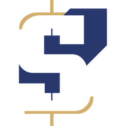

در حال بارگذاری…
خلاصه و تفسیر خبرهای امروز.
قبل از انتشار خبرهای مهم، ربات بهت پیام میده.
ساعتها به وقت تهران · منبع دادهها ForexFactory و BEA خوانش تأثیر بر دلار یک برداشت کلی است، نه سیگنال معاملاتی. نسخه ۲۶